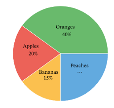

home
한글
English
통계 자료실
법규 위반
음주 정도
도로 종류
사고 유형
시도 별
서비스 소개
고객 센터
로그인
시도별
연도
2005년
2006년
2007년
2008년
2009년
2010년
2011년
2012년
2013년
2014년
2015년
2016년
2017년
2018년
2019년
2020년
월
전체
월별 전체
1월
2월
3월
4월
5월
6월
7월
8월
9월
10월
11월
12월
시도 선택
전체
서울
부산
대구
인천
광주
대전
세종
울산
경기
강원
충북
충남
전북
전남
경북
경남
제주
조회하기
사고 건 수
0
사망자 수
0
부상자 수
0

Excel Downlod